Hands-on Exercise 2: Choropleth Mapping with R
Getting Started
This exercise focuses on the usage of tmap package, with the aid of functions from sf and tidyverse.
Before starting, the above mentioned packages need to be installed through the following code.
Import data
This exercise would be using back the dataset from the previous hands-on exercise, together with population distribution dataset from Department of Statistics Singapore, which is also known as SingStat.
Importing Master Plan 2014 data
The .shp file could be imported using st_read() function from the sf package. This dataset is stored into the variable mpsz. The relative pathway is starting from directory storing the file Hands-on_Ex02.qmd.
Reading layer `MP14_SUBZONE_WEB_PL' from data source
`/Users/tangtang/Desktop/IS415 Geospatial Analytics and Applications/practice/is415gaa/data/geospatial/MP14_SUBZONE_WEB_PL.shp'
using driver `ESRI Shapefile'
Simple feature collection with 323 features and 15 fields
Geometry type: MULTIPOLYGON
Dimension: XY
Bounding box: xmin: 2667.538 ymin: 15748.72 xmax: 56396.44 ymax: 50256.33
Projected CRS: SVY21Simple feature collection with 323 features and 15 fields
Geometry type: MULTIPOLYGON
Dimension: XY
Bounding box: xmin: 2667.538 ymin: 15748.72 xmax: 56396.44 ymax: 50256.33
Projected CRS: SVY21
First 10 features:
OBJECTID SUBZONE_NO SUBZONE_N SUBZONE_C CA_IND PLN_AREA_N
1 1 1 MARINA SOUTH MSSZ01 Y MARINA SOUTH
2 2 1 PEARL'S HILL OTSZ01 Y OUTRAM
3 3 3 BOAT QUAY SRSZ03 Y SINGAPORE RIVER
4 4 8 HENDERSON HILL BMSZ08 N BUKIT MERAH
5 5 3 REDHILL BMSZ03 N BUKIT MERAH
6 6 7 ALEXANDRA HILL BMSZ07 N BUKIT MERAH
7 7 9 BUKIT HO SWEE BMSZ09 N BUKIT MERAH
8 8 2 CLARKE QUAY SRSZ02 Y SINGAPORE RIVER
9 9 13 PASIR PANJANG 1 QTSZ13 N QUEENSTOWN
10 10 7 QUEENSWAY QTSZ07 N QUEENSTOWN
PLN_AREA_C REGION_N REGION_C INC_CRC FMEL_UPD_D X_ADDR
1 MS CENTRAL REGION CR 5ED7EB253F99252E 2014-12-05 31595.84
2 OT CENTRAL REGION CR 8C7149B9EB32EEFC 2014-12-05 28679.06
3 SR CENTRAL REGION CR C35FEFF02B13E0E5 2014-12-05 29654.96
4 BM CENTRAL REGION CR 3775D82C5DDBEFBD 2014-12-05 26782.83
5 BM CENTRAL REGION CR 85D9ABEF0A40678F 2014-12-05 26201.96
6 BM CENTRAL REGION CR 9D286521EF5E3B59 2014-12-05 25358.82
7 BM CENTRAL REGION CR 7839A8577144EFE2 2014-12-05 27680.06
8 SR CENTRAL REGION CR 48661DC0FBA09F7A 2014-12-05 29253.21
9 QT CENTRAL REGION CR 1F721290C421BFAB 2014-12-05 22077.34
10 QT CENTRAL REGION CR 3580D2AFFBEE914C 2014-12-05 24168.31
Y_ADDR SHAPE_Leng SHAPE_Area geometry
1 29220.19 5267.381 1630379.3 MULTIPOLYGON (((31495.56 30...
2 29782.05 3506.107 559816.2 MULTIPOLYGON (((29092.28 30...
3 29974.66 1740.926 160807.5 MULTIPOLYGON (((29932.33 29...
4 29933.77 3313.625 595428.9 MULTIPOLYGON (((27131.28 30...
5 30005.70 2825.594 387429.4 MULTIPOLYGON (((26451.03 30...
6 29991.38 4428.913 1030378.8 MULTIPOLYGON (((25899.7 297...
7 30230.86 3275.312 551732.0 MULTIPOLYGON (((27746.95 30...
8 30222.86 2208.619 290184.7 MULTIPOLYGON (((29351.26 29...
9 29893.78 6571.323 1084792.3 MULTIPOLYGON (((20996.49 30...
10 30104.18 3454.239 631644.3 MULTIPOLYGON (((24472.11 29...Looking at the content of mpsz, only the top 10 rows would be shown. This is because the data would display top 10 features, which also means the first 10 rows. ## Importing Population data The 2nd data file we have is of CSV format, thus it can be imported through read_csv() function from
Rows: 738492 Columns: 7
── Column specification ────────────────────────────────────────────────────────
Delimiter: ","
chr (5): PA, SZ, AG, Sex, FA
dbl (2): Pop, Time
ℹ Use `spec()` to retrieve the full column specification for this data.
ℹ Specify the column types or set `show_col_types = FALSE` to quiet this message.# A tibble: 738,492 × 7
PA SZ AG Sex FA Pop Time
<chr> <chr> <chr> <chr> <chr> <dbl> <dbl>
1 Ang Mo Kio Ang Mo Kio Town Centre 0_to_4 Males <= 60 0 2011
2 Ang Mo Kio Ang Mo Kio Town Centre 0_to_4 Males >60 to 80 10 2011
3 Ang Mo Kio Ang Mo Kio Town Centre 0_to_4 Males >80 to 100 30 2011
4 Ang Mo Kio Ang Mo Kio Town Centre 0_to_4 Males >100 to 120 80 2011
5 Ang Mo Kio Ang Mo Kio Town Centre 0_to_4 Males >120 20 2011
6 Ang Mo Kio Ang Mo Kio Town Centre 0_to_4 Males Not Available 0 2011
7 Ang Mo Kio Ang Mo Kio Town Centre 0_to_4 Females <= 60 0 2011
8 Ang Mo Kio Ang Mo Kio Town Centre 0_to_4 Females >60 to 80 10 2011
9 Ang Mo Kio Ang Mo Kio Town Centre 0_to_4 Females >80 to 100 40 2011
10 Ang Mo Kio Ang Mo Kio Town Centre 0_to_4 Females >100 to 120 90 2011
# ℹ 738,482 more rowsData Preparation
Now the population data for the year 2020 is extracted from the original population dataset stored in the variable popdata, it’s stored as popdata2020.
Show the code
popdata2020 <- popdata %>%
filter(Time == 2020) %>%
group_by(PA, SZ, AG) %>%
summarise(`POP` = sum(`Pop`)) %>%
ungroup()%>%
pivot_wider(names_from=AG,
values_from=POP) %>%
mutate(YOUNG = rowSums(.[3:6])
+rowSums(.[12])) %>%
mutate(`ECONOMY ACTIVE` = rowSums(.[7:11])+
rowSums(.[13:15]))%>%
mutate(`AGED`=rowSums(.[16:21])) %>%
mutate(`TOTAL`=rowSums(.[3:21])) %>%
mutate(`DEPENDENCY` = (`YOUNG` + `AGED`)
/`ECONOMY ACTIVE`) %>%
select(`PA`, `SZ`, `YOUNG`,
`ECONOMY ACTIVE`, `AGED`,
`TOTAL`, `DEPENDENCY`)`summarise()` has grouped output by 'PA', 'SZ'. You can override using the
`.groups` argument.# A tibble: 332 × 7
PA SZ YOUNG `ECONOMY ACTIVE` AGED TOTAL DEPENDENCY
<chr> <chr> <dbl> <dbl> <dbl> <dbl> <dbl>
1 Ang Mo Kio Ang Mo Kio Town Cen… 1440 2640 770 4850 0.837
2 Ang Mo Kio Cheng San 6660 15380 6080 28120 0.828
3 Ang Mo Kio Chong Boon 6150 13970 6450 26570 0.902
4 Ang Mo Kio Kebun Bahru 5500 12040 5080 22620 0.879
5 Ang Mo Kio Sembawang Hills 2130 3390 1270 6790 1.00
6 Ang Mo Kio Shangri-La 3970 8430 3540 15940 0.891
7 Ang Mo Kio Tagore 2220 4160 1520 7900 0.899
8 Ang Mo Kio Townsville 4720 11430 5050 21200 0.855
9 Ang Mo Kio Yio Chu Kang 0 0 0 0 NaN
10 Ang Mo Kio Yio Chu Kang East 1190 2230 740 4160 0.865
# ℹ 322 more rowsJoining geospatial and aspatial data
As the PA and SZ fields in popdata2020 are made up of both upper and lower case characters while the corresponding field in mpsz contains only upper case characters, there is a need to convert PA and SZ fields in popdata2020 into the same format as that in mpsz.
Show the code
# A tibble: 234 × 7
PA SZ YOUNG `ECONOMY ACTIVE` AGED TOTAL DEPENDENCY
<chr> <chr> <dbl> <dbl> <dbl> <dbl> <dbl>
1 ANG MO KIO ANG MO KIO TOWN CEN… 1440 2640 770 4850 0.837
2 ANG MO KIO CHENG SAN 6660 15380 6080 28120 0.828
3 ANG MO KIO CHONG BOON 6150 13970 6450 26570 0.902
4 ANG MO KIO KEBUN BAHRU 5500 12040 5080 22620 0.879
5 ANG MO KIO SEMBAWANG HILLS 2130 3390 1270 6790 1.00
6 ANG MO KIO SHANGRI-LA 3970 8430 3540 15940 0.891
7 ANG MO KIO TAGORE 2220 4160 1520 7900 0.899
8 ANG MO KIO TOWNSVILLE 4720 11430 5050 21200 0.855
9 ANG MO KIO YIO CHU KANG EAST 1190 2230 740 4160 0.865
10 ANG MO KIO YIO CHU KANG WEST 6610 12810 4680 24100 0.881
# ℹ 224 more rowsAfter the conversion, the 2 datasets can finally be combined into a master dataset mpsz_pop2020.
We are saving our newly created master dataset.
Plotting with tmap
<<<<<<< HEAD <<<<<<< HEAD
The qtm() function draws a cartographic standard choropleth map by default.
======= The qtm() function draws a cartographic standard choropleth map by default. >>>>>>> b645483 (hands-on_ex02; fix bug on hands-on_ex01) =======
The qtm() function draws a cartographic standard choropleth map by default.
4757c24 (work (published again))
tmap mode set to plotting
<<<<<<< HEAD <<<<<<< HEAD
The tmap elements offer possibility of customisation.
======= The tmap elements offer possibility of customisation. >>>>>>> b645483 (hands-on_ex02; fix bug on hands-on_ex01) =======
The tmap elements offer possibility of customisation.
4757c24 (work (published again))
Show the code
tm_shape(mpsz_pop2020)+
tm_fill("DEPENDENCY",
style = "quantile",
palette = "Blues",
title = "Dependency ratio") +
tm_layout(main.title = "Distribution of Dependency Ratio by planning subzone",
main.title.position = "center",
main.title.size = 1.2,
legend.height = 0.45,
legend.width = 0.35,
frame = TRUE) +
tm_borders(alpha = 0.5) +
tm_compass(type="8star", size = 2) +
tm_scale_bar() +
tm_grid(alpha =0.2) +
tm_credits("Source: Planning Sub-zone boundary from Urban Redevelopment Authorithy (URA)\n and Population data from Department of Statistics DOS",
position = c("left", "bottom"))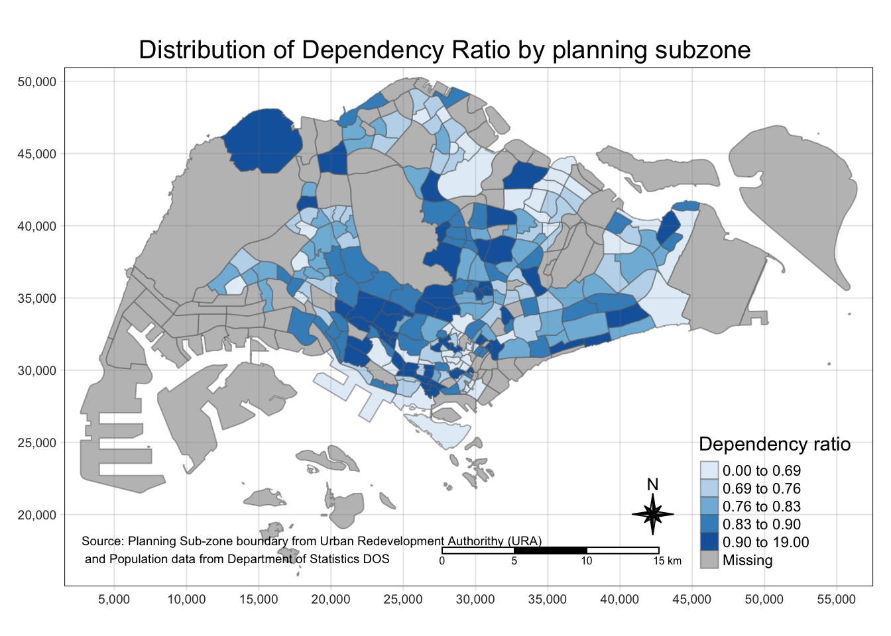
<<<<<<< HEAD <<<<<<< HEAD
A base map layer is required for the other elements to be applied on.
======= A base map layer is required for the other elements to be applied on. >>>>>>> b645483 (hands-on_ex02; fix bug on hands-on_ex01) =======
A base map layer is required for the other elements to be applied on.
4757c24 (work (published again))

<<<<<<< HEAD <<<<<<< HEAD
By inserting the column name into tm_polygons(), the map would be shaded accordingly with YlOrRd of ColorBrewer as the default colour scheme.
======= By inserting the column name into tm_polygons(), the map would be shaded accordingly with YlOrRd of ColorBrewer as the default colour scheme. >>>>>>> b645483 (hands-on_ex02; fix bug on hands-on_ex01) =======
By inserting the column name into tm_polygons(), the map would be shaded accordingly with YlOrRd of ColorBrewer as the default colour scheme.
4757c24 (work (published again))

<<<<<<< HEAD <<<<<<< HEAD
Changing to tm_fill() would remove the borders completely
======= Changing to tm_fill() would remove the borders completely >>>>>>> b645483 (hands-on_ex02; fix bug on hands-on_ex01) =======
Changing to tm_fill() would remove the borders completely
4757c24 (work (published again))

<<<<<<< HEAD <<<<<<< HEAD
Using tm_borders(lwd,alpha) allows one to customise the borders shown for each district, with lwd manipulating the border line width and alpha targetting the line type.
======= Using tm_borders(lwd,alpha) allows one to customise the borders shown for each district, with lwd manipulating the border line width and alpha targetting the line type. >>>>>>> b645483 (hands-on_ex02; fix bug on hands-on_ex01) =======
Using tm_borders(lwd,alpha) allows one to customise the borders shown for each district, with lwd manipulating the border line width and alpha targetting the line type.
4757c24 (work (published again))

<<<<<<< HEAD <<<<<<< HEAD
One would be able to utilise quantile data classification with 5 classes
======= One would be able to utilise quantile data classification with 5 classes >>>>>>> b645483 (hands-on_ex02; fix bug on hands-on_ex01) =======
One would be able to utilise quantile data classification with 5 classes
4757c24 (work (published again))
Show the code
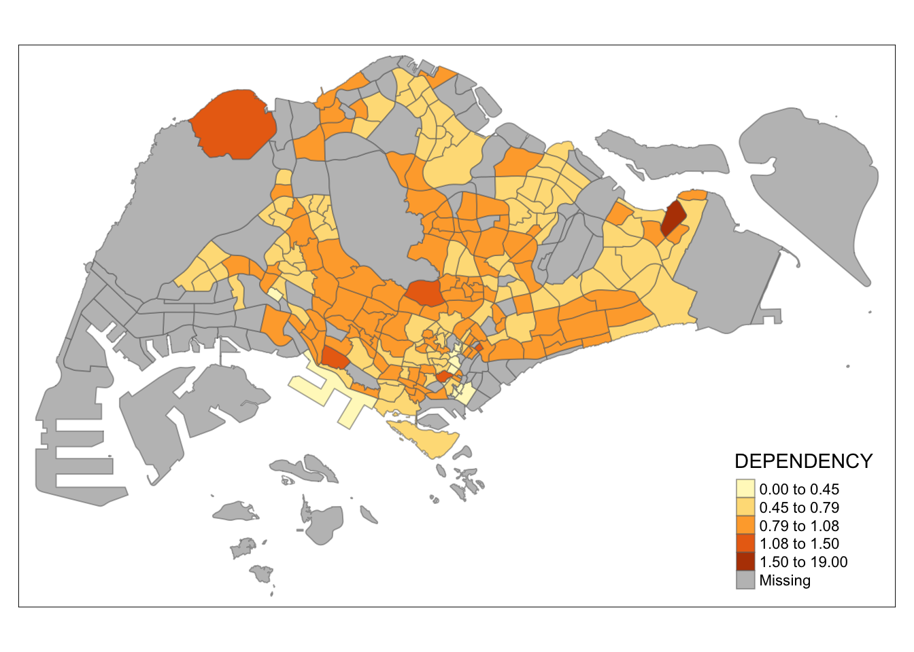
<<<<<<< HEAD <<<<<<< HEAD
Or with even classification
======= Or with even classification >>>>>>> b645483 (hands-on_ex02; fix bug on hands-on_ex01) =======
Or with even classification
4757c24 (work (published again))
Show the code

<<<<<<< HEAD <<<<<<< HEAD
Apart from the default classification methods, one can define the break points
======= Apart from the default classification methods, one can define the break points >>>>>>> b645483 (hands-on_ex02; fix bug on hands-on_ex01) =======
Apart from the default classification methods, one can define the break points
4757c24 (work (published again))
Min. 1st Qu. Median Mean 3rd Qu. Max. NA's
0.0000 0.7113 0.7926 0.8561 0.8786 19.0000 92 Show the code
Warning: Values have found that are higher than the highest break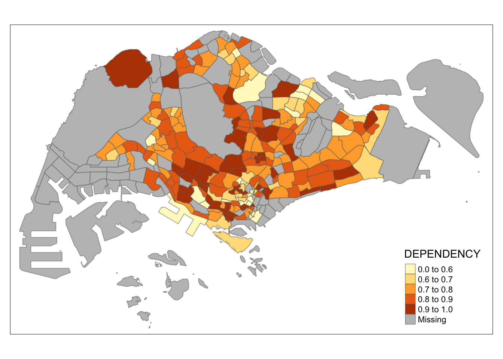
<<<<<<< HEAD <<<<<<< HEAD
The break points in this case is a combination of quantiles, minimum, maximum and mean values. # Colour schemes available One could define the colour scheme to be used for the categories. This is using blue sequential colour scheme, ordered by shades of the colour
======= The break points in this case is a combination of quantiles, minimum, maximum and mean values. # Colour schemes available One could define the colour scheme to be used for the categories. This is using blue sequential colour scheme, ordered by shades of the colour >>>>>>> b645483 (hands-on_ex02; fix bug on hands-on_ex01) =======
The break points in this case is a combination of quantiles, minimum, maximum and mean values. # Colour schemes available One could define the colour scheme to be used for the categories. This is using blue sequential colour scheme, ordered by shades of the colour
4757c24 (work (published again))
Show the code
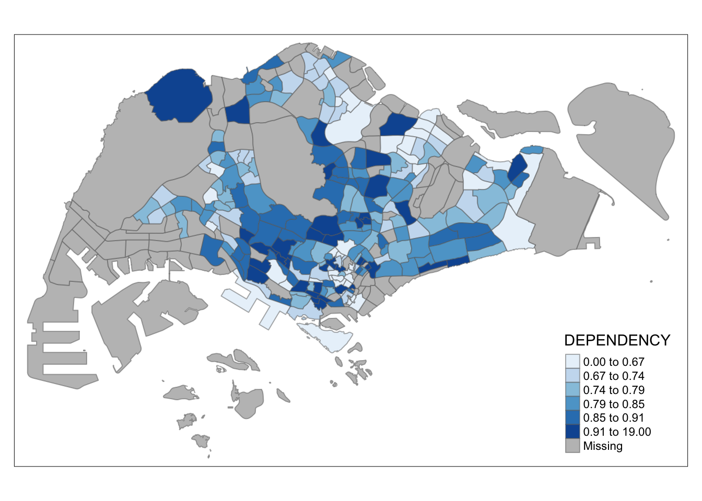
<<<<<<< HEAD <<<<<<< HEAD
Green sequential colour scheme with inverse shade
======= Green sequential colour scheme with inverse shade >>>>>>> b645483 (hands-on_ex02; fix bug on hands-on_ex01) =======
Green sequential colour scheme with inverse shade
4757c24 (work (published again))
Show the code
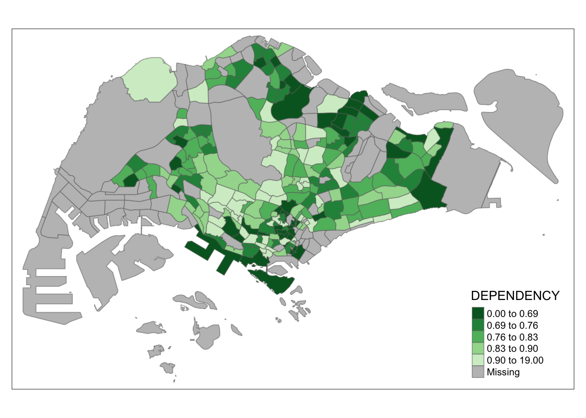
<<<<<<< HEAD <<<<<<< HEAD
Customising Map Legend
Some legend options for consideration
=======
4757c24 (work (published again)) ## Customising Map Legend
Some legend options for consideration <<<<<<< HEAD >>>>>>> b645483 (hands-on_ex02; fix bug on hands-on_ex01) =======
4757c24 (work (published again))
Show the code
tm_shape(mpsz_pop2020)+
tm_fill("DEPENDENCY",
style = "jenks",
palette = "Blues",
legend.hist = TRUE,
legend.is.portrait = TRUE,
legend.hist.z = 0.1) +
tm_layout(main.title = "Distribution of Dependency Ratio by planning subzone \n(Jenks classification)",
main.title.position = "center",
main.title.size = 1,
legend.height = 0.45,
legend.width = 0.35,
legend.outside = FALSE,
legend.position = c("right", "bottom"),
frame = FALSE) +
tm_borders(alpha = 0.5)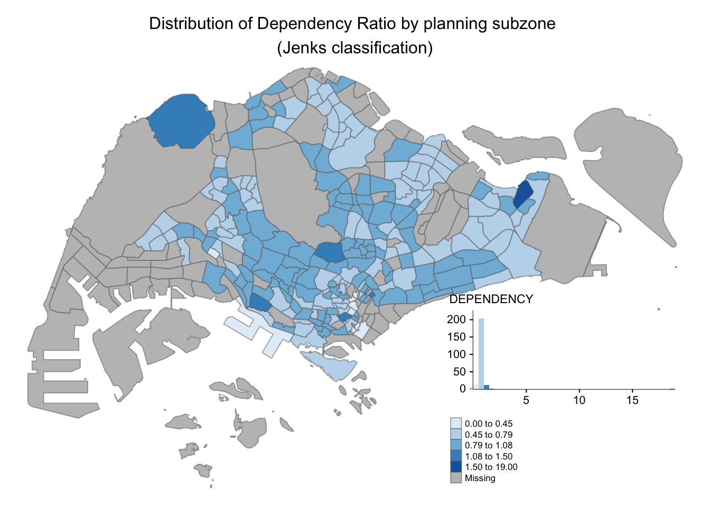
<<<<<<< HEAD <<<<<<< HEAD
Customising Map Layout
This is how the classic style looks like.
=======
4757c24 (work (published again)) ## Customising Map Layout
This is how the classic style looks like. <<<<<<< HEAD >>>>>>> b645483 (hands-on_ex02; fix bug on hands-on_ex01) =======
4757c24 (work (published again))
Show the code
tmap style set to "classic"other available styles are: "white", "gray", "natural", "cobalt", "col_blind", "albatross", "beaver", "bw", "watercolor" 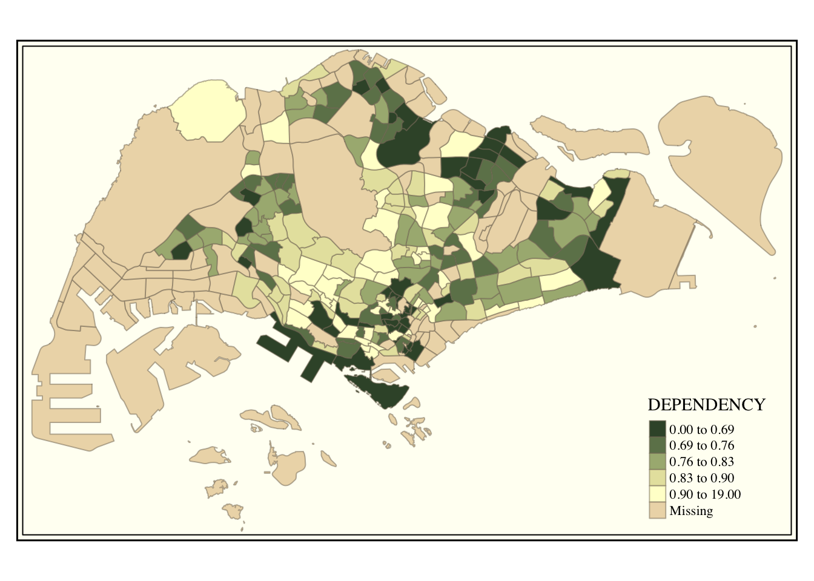
<<<<<<< HEAD <<<<<<< HEAD
Other elements
Some elements that are not essential but good to have E.g. compass
======= ## Other elements Some elements that are not essential but good to have E.g. compass >>>>>>> b645483 (hands-on_ex02; fix bug on hands-on_ex01) =======
Other elements
Some elements that are not essential but good to have E.g. compass
4757c24 (work (published again))
Show the code
tm_shape(mpsz_pop2020)+
tm_fill("DEPENDENCY",
style = "quantile",
palette = "Blues",
title = "No. of persons") +
tm_layout(main.title = "Distribution of Dependency Ratio \nby planning subzone",
main.title.position = "center",
main.title.size = 1.2,
legend.height = 0.45,
legend.width = 0.35,
frame = TRUE) +
tm_borders(alpha = 0.5) +
tm_compass(type="8star", size = 2) +
tm_scale_bar(width = 0.15) +
tm_grid(lwd = 0.1, alpha = 0.2) +
tm_credits("Source: Planning Sub-zone boundary from Urban Redevelopment Authorithy (URA)\n and Population data from Department of Statistics DOS",
position = c("left", "bottom"))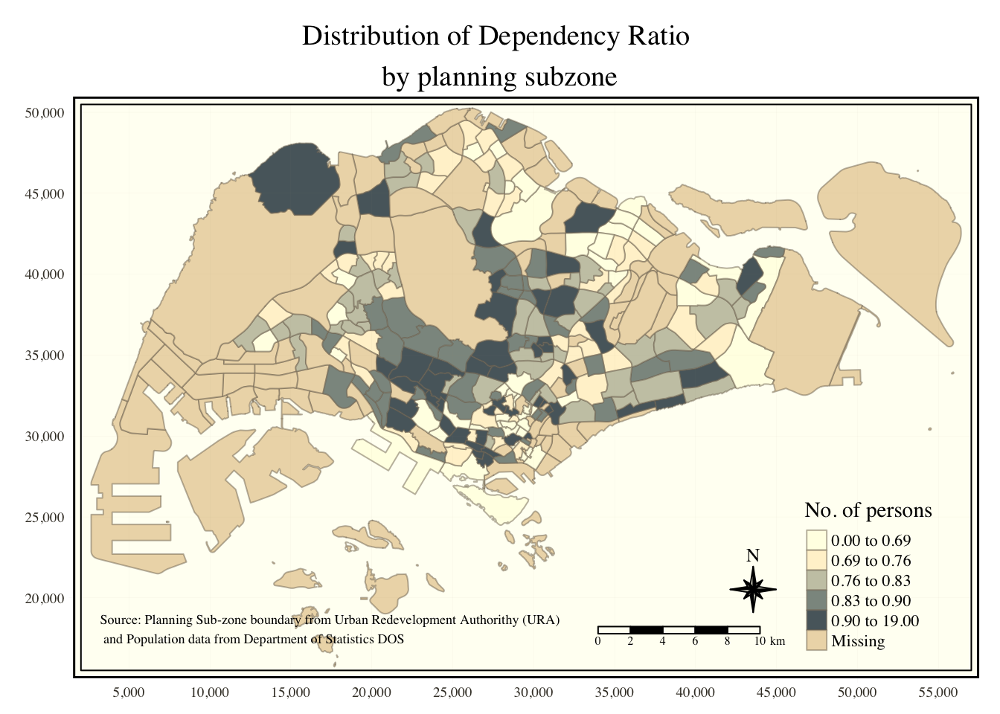
<<<<<<< HEAD <<<<<<< HEAD
To return to the default style setting, the following code chunk is used.
Multiple Choropleth maps
There are 3 ways of plotting multiple maps at once ### 1. Assigning multiple values to at least one of the aesthetic arguments
=======
4757c24 (work (published again)) To return to the default style setting, the following code chunk is used.
Multiple Choropleth maps
<<<<<<< HEAD There are 3 ways of plotting multiple maps at once ### 1. Assigning multiple values to at least one of the aesthetic arguments >>>>>>> b645483 (hands-on_ex02; fix bug on hands-on_ex01) =======
There are 3 ways of plotting multiple maps at once ### 1. Assigning multiple values to at least one of the aesthetic arguments
4757c24 (work (published again))
Show the code
tmap style set to "white"other available styles are: "gray", "natural", "cobalt", "col_blind", "albatross", "beaver", "bw", "classic", "watercolor" 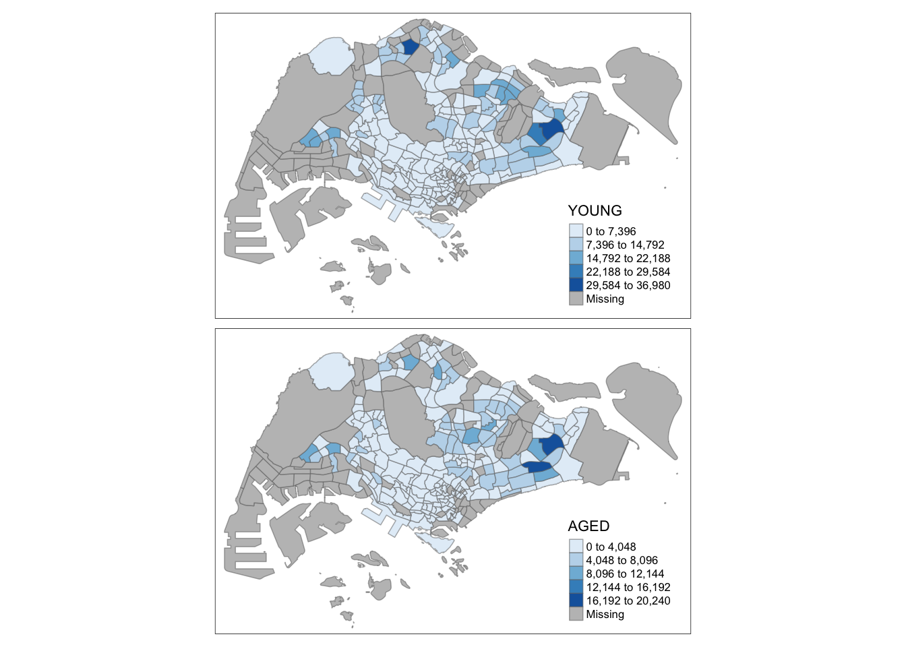
Show the code
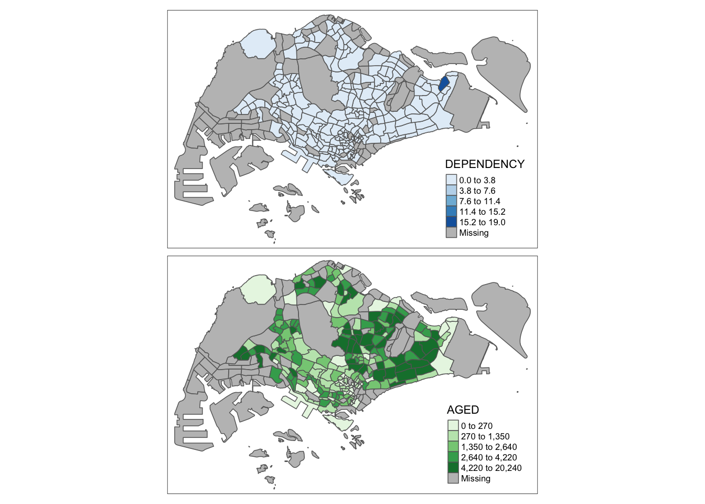
<<<<<<< HEAD <<<<<<< HEAD
2. Defining a group-by variable in tm_facets()
======= ### 2. Defining a group-by variable in tm_facets() >>>>>>> b645483 (hands-on_ex02; fix bug on hands-on_ex01) =======
2. Defining a group-by variable in tm_facets()
4757c24 (work (published again))
Show the code
Warning: The argument drop.shapes has been renamed to drop.units, and is
therefore deprecated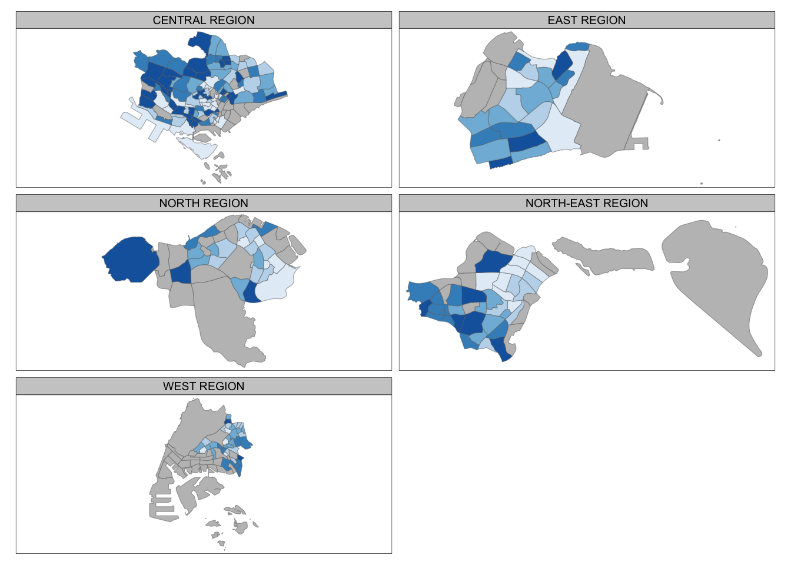
<<<<<<< HEAD <<<<<<< HEAD
3. Creating multiple stand-alone maps with tmap_arrange()
======= ### 3. Creating multiple stand-alone maps with tmap_arrange() >>>>>>> b645483 (hands-on_ex02; fix bug on hands-on_ex01) =======
3. Creating multiple stand-alone maps with tmap_arrange()
4757c24 (work (published again))
Show the code
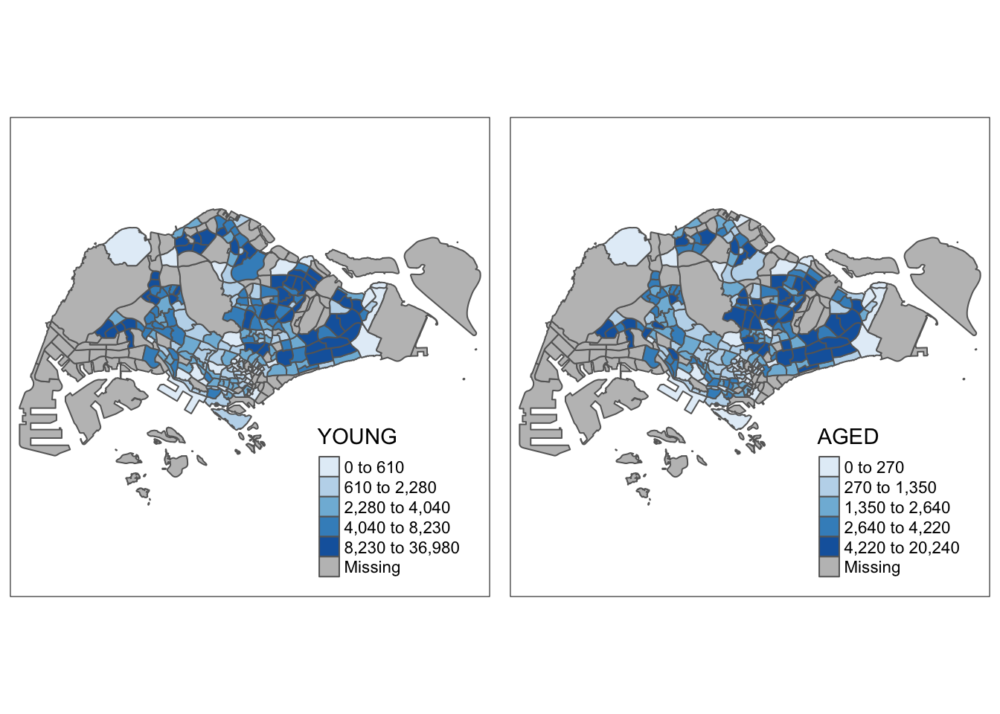
<<<<<<< HEAD <<<<<<< HEAD
Selection Criterion
Set the criterion on the original dataset
=======
4757c24 (work (published again)) ## Selection Criterion
Set the criterion on the original dataset <<<<<<< HEAD >>>>>>> b645483 (hands-on_ex02; fix bug on hands-on_ex01) =======
4757c24 (work (published again))
Show the code
tm_shape(mpsz_pop2020[mpsz_pop2020$REGION_N=="CENTRAL REGION", ])+
tm_fill("DEPENDENCY",
style = "quantile",
palette = "Blues",
legend.hist = TRUE,
legend.is.portrait = TRUE,
legend.hist.z = 0.1) +
tm_layout(legend.outside = TRUE,
legend.height = 0.45,
legend.width = 5.0,
legend.position = c("right", "bottom"),
frame = FALSE) +
tm_borders(alpha = 0.5)Warning in pre_process_gt(x, interactive = interactive, orig_crs =
gm$shape.orig_crs): legend.width controls the width of the legend within a map.
Please use legend.outside.size to control the width of the outside legend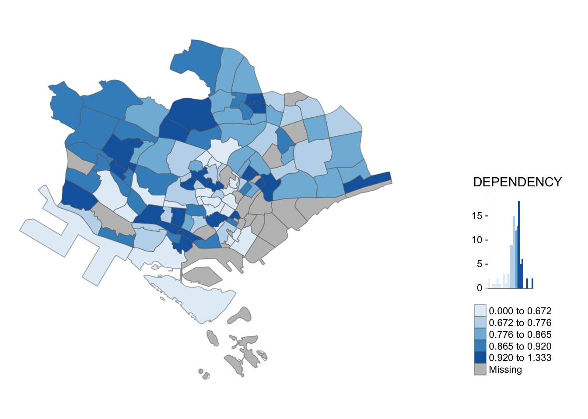